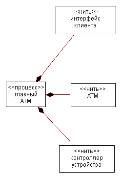
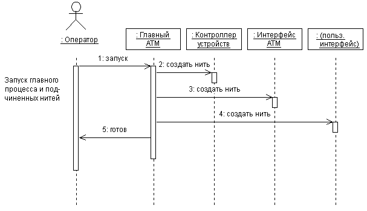
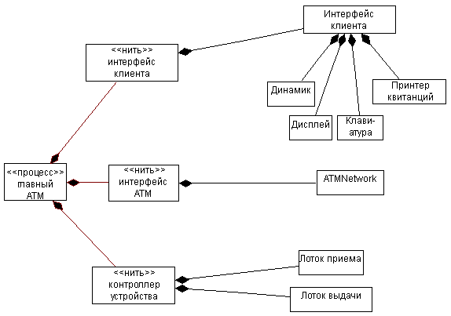

| Задача: Создание описания архитектуры среды выполнения |
|
 |
| Эта задача определяет архитектуру процесса для системы в терминах активных классов и их экземпляров и ее взаимосвязь с нитями и процессами операционной системы. |
| Дисциплины: Анализ и проектирование |
|
Назначение
-
Проанализировать требования к параллелизму,
-
Определить процессы и их жизненные циклы
-
Определить механизмы межпроцессной связи и выделить ресурсы межпроцессной координации
-
Распределить элементы модели между процессами.
|
Взаимосвязи
| Роли | Основной исполнитель:
| Дополнительные исполнители:
|
| Входы | Обязательный:
| Необязательный:
|
| Выходы |
|
Основное описание
Активные объекты (т.е. экземпляры активных классов) служат для представления параллельных нитей, выполняемых в системе:
у каждого активного объекта есть своя собственная управляющая нить, которая, условно говоря, является корнем фрейма
стека выполнения. Отображение активных объектов в фактические нити или процессы операционной системы может выполняться
по-разному в зависимости от требований к времени реакции системы и к нагрузке на переключение контекста. Например,
несколько активных объектов, вместе с простым планировщиком, могут совместно использовать одну нить операционной
системы, производя впечатление объектов, работающих параллельно. Однако при блокировке одного из таких объектов,
например из-за выполнения им синхронного ввода-вывода, другие активные объекты группы не смогут отвечать на события,
происходящие в период блокировки нити операционной системы.
Другая крайность - предоставление каждому активному объекту отдельной нити операционной системы - позволяет существенно
ускорить реакцию системы, но вместе с тем повышает нагрузку, связанную с переключением контекста, что может
неблагоприятно сказаться на ресурсах, участвующих в обработке.
В системах, работающих в режиме реального времени, моделировать параллелизм рекомендуется с помощью капсул (см. раздел
Рабочий продукт: капсула); подобно активным классам, у каждой капсулы
есть своя управляющая нить, но, кроме того, у капсулы есть возможность инкапсуляции и семантика составления, упрощающая
моделирование сложных проблем в режиме реального времени.
Эта задача определяет архитектуру процесса для системы в терминах активных классов и их экземпляров и ее взаимосвязь с
нитями и процессами операционной системы. Для систем, работающих в режиме реального времени, архитектура процесса
будет определена в терминах капсул и их связанного отображения в процессы и нити операционной системы.
В начале этапа уточнения эта архитектура может носить предварительный характер, однако к концу этапа уточнения процессы
и нити должны быть уже вполне определены. Результаты выполнения этой задачи попадают в модель проектирования - в
частности, в панель процессов (см. раздел Концепция: панель
процессов).
|
Шаги
|
Проанализируйте требования к параллелизму
|
Цель
|
Определить степень параллелизма выполнения, необходимую для системы. Это определение поможет
сформировать архитектуру.
|
При выполнении задачи из раздела Задача:
определить элементы проектирования рассматривались требования к параллелизму, вызванные, в первую очередь,
естественно возникающими требованиями к параллелизму в проблемном домене.
Результатом этого был набор активных классов, представляющий логические управляющие нити в системе. В системах,
работающих в режиме реального времени, эти активные классы представлены капсулой (см. раздел Рабочий продукт: капсула).
На этом шаге мы рассмотрим другие источники требований к параллелизм - а именно, те, которые вызваны нефункциональными
требованиями системы.
Требования к параллелизму зависят от следующих факторов:
-
Необходимая степень распределенности системы. Системе, поведение которой должно быть распределено среди
процессоров или узлов, фактически требуется мультипроцессная архитектура. Система, использующая какую-либо
разновидность Системы управления базой данных или Администратора транзакций, должна также учитывать процессы,
вводимые этими основными подсистемами.
-
Вычислительная интенсивность основных алгоритмов. Для обеспечения приемлемого времени ответа может
потребоваться выделить вычислительно интенсивные операции в отдельный процесс или нить. В этом случае, во время
выполнения таких вычислений система по-прежнему сможет отвечать на действия пользователей, хотя и с меньшими
ресурсами.
-
Степень параллелизма выполнения, поддерживаемая средой. Если операционная система или среда не поддерживает
нити (упрощенные процессы), то изучать их влияние на архитектуру системы бессмысленно.
-
Необходимость в устойчивости к сбоям в системе. Резервные процессоры требуют резервных процессов, что
вызывает необходимость в синхронизации основных и резервных процессов.
-
Шаблон поступления событий в системе. В системах с внешними устройствами или датчиками шаблоны поступления
входящих событий могут отличаться в зависимости от датчика. Некоторые события могут быть периодическими (т.е.
происходить более-менее регулярно), другие - нет (т.е. происходить в произвольные моменты). Активные классы,
представляющие устройства, генерирующие различные шаблоны событий, обычно назначаются различным нитям операционной
системы с различными алгоритмами планирования, во избежание пропуска событий или контрольных сроков окончания
обработки (если такой пропуск считается недопустимым в системе). Сказанное в равной степени относится и к капсулам,
если они используются в проектировании систем, работающих в режиме реального времени.
Как это часто бывает в вопросах архитектуры, эти требования могут в некоторой степени исключать друг друга. Нет ничего
необычного в том, чтобы, во всяком случае поначалу, эти требования конфликтовали. Расстановка требований по важности
поможет устранить конфликт.
|
Определите процессы и нити
|
Цель
|
Определить процессы и нити, которые будут существовать в системе.
|
Простейший подход заключается в том, чтобы выделить все активные объекты общей нити или процессу и воспользоваться
простым планировщиком активных объектов, поскольку это минимизирует нагрузку, связанную с переключением контекста.
Однако, в некоторых случаях, может потребоваться распределить активные объекты по нескольким нитям или процессам.
Именно так обычно бывает в большинстве систем, работающих в режиме реального времени, когда к капсулам, представляющим
логические нити, предъявляются жесткие требования по времени.
Если активный объект, использующий нить операционной системы совместно с другими активными объектами, отправляет
синхронный вызов другому процессу или нити, и этот вызов блокирует общую нить операционной системы вызывающего объекта,
то работа всех остальных активных объектов, находящихся в вызывающем процессе, будет автоматически приостановлена.
Однако это недопустимо: вызов, синхронный с точки зрения активного объекта, может обрабатываться асинхронно с точки
зрения простого планировщика, управляющего группой активных объектов, - планировщик приостанавливает работу активного
объекта, отправляющего вызов (в ожидании выполнения его синхронного вызова), а затем планирует запуск других активных
объектов.
По окончании исходной 'синхронной' операции можно возобновить работу вызывающего активного объекта. Однако такой подход
неуниверсален, поскольку не всегда возможно спроектировать планировщик таким образом, чтобы он перехватывал все
синхронные вызовы, прежде чем они приведут к блокировке. Учтите, что синхронный вызов активных объектов, использующих
один и тот же процесс или нить операционной системы, может, в общем случае, обрабатываться планировщиком указанным
способом. Фактически, это эквивалентно вызову процедуры, с точки зрения вызывающего активного объекта.
Сказанное позволяет сделать вывод о том, что активные объекты должны быть сгруппированы в процессы или нити в
зависимости от того, насколько необходимо их параллельное выполнение одновременно с синхронными вызовами, блокирующими
нить. Таким образом, единственный случай, когда активный объект должен быть упакован в том же процессе или нити с
другим объектом, использующим синхронные вызовы, блокирующие нить, - это когда ему не требуется выполняться
одновременно с этим объектом и блокировка другого объекта не влияет на его выполнение. В исключительном случае, когда
важнее всего время реакции системы, может потребоваться создание отдельной нити или процесса для каждого активного
объекта.
Для систем, работающих в режиме реального времени, основанные на сообщениях интерфейсы капсул означают, что проще
работать с планировщиком, гарантирующим, по крайней мере для межкапсульной связи, что нити поддерживающей операционной
системы никогда не блокируются, даже если капсула синхронно контактирует с другой капсулой. Однако капсула по-прежнему
может выдать запрос напрямую операционной системе, например, на синхронное ожидание, который приведет к блокировке
нити. Необходимо выработать соглашения для служб низшего уровня, запускаемых капсулами, которые позволят избежать
такого поведения, если капсулы будут использовать общую нить (и простой планировщик для имитации параллелизма).
Общее правило: в вышеуказанных ситуациях лучше применять упрощенные нити вместо полноценных процессов, поскольку это
снижает нагрузку. Однако в некоторых особых случаях все же может понадобиться воспользоваться специальными
характеристиками процессов. Поскольку нити совместно используют одно и то же адресное пространство, их применение
изначально более рискованно по сравнению с процессами. Если необходимо считаться с вероятностью случайной перезаписи,
то лучше воспользоваться процессами. Более того, поскольку процессы представляют собой независимые единицы
восстановления в большинстве операционных систем, может быть полезно выделять активные объекты процессам в зависимости
от их потребности в независимом восстановлении. Иными словами, все активные объекты, которые необходимо восстанавливать
как единое целое, можно упаковать в один процесс.
Создайте процесс или нить (упрощенный процесс) для каждого отдельного управляющего потока, необходимого системе. Нить
следует применять, когда необходим вложенный управляющий поток (т.е. когда внутри процесса необходим независимый
управляющий поток на уровне подзадач).
Например, отдельные управляющие нити могут потребоваться для выполнения следующих задач:
-
Разделить вопросы между различными областями программного обеспечения
-
Воспользоваться несколькими CPU на одном или нескольких узлах в распределенной системе
-
Повысить коэффициент использования CPU путем выделения циклов другим операциям при приостановке управляющей нити
-
Расставить операции по приоритетам
-
Поддержать разделение нагрузки между несколькими процессами и процессорами
-
Повысить готовность системы за счет наличия резервных процессов
-
Поддержать DBMS, Администратор транзакций или другие основные подсистемы.
Пример
Банкомат должен обрабатывать асинхронные события, поступающие из трех различных источников: пользователя системы,
устройств банкомата (в случае сбоя в раздатчике денег, например) и сети банкомата (в случае директивы на завершение
работы, поступившей из сети). Для обработки этих асинхронных событий можно определить три отдельных нити выполнения в
самом банкомате с помощью активных классов языка UML, как показано ниже.

Процессы и нити в банкомате
|
Определите жизненные циклы процессов
|
Цель
|
Определить, когда должны создаваться и уничтожаться процессы и нити.
|
Каждый управляющий процесс или нить должны быть созданы и уничтожены. В однопроцессной архитектуре процесс создается
при запуске приложения и уничтожается при завершении работы приложения. В мультипроцессных архитектурах новые процессы
(или нити) обычно порождаются или ответвляются от начального процесса, создаваемого операционной системой при запуске
приложения. Эти процессы также должны быть явно уничтожены.
Последовательность событий, приводящая к созданию и уничтожению процесса, должна быть определена и задокументирована,
как и механизм создания и удаления.
Пример
В банкомате запускается один главный процесс, отвечающий за координирование поведения всей системы. Он, в свою очередь,
порождает подчиненные управляющие нити, отслеживающие различные части системы: системные устройства и события,
поступающие от клиента и из сети банкомата. Создание этих процессов и нитей моделируется с помощью активных
классов в UML, и создание экземпляров этих активных классов может быть продемонстрировано на диаграмме
последовательности, как показано ниже:

Создание процессов и нитей во время инициализации системы
|
Определите механизмы межпроцессной связи
|
Цель
|
Определить средства для связи между процессами и нитями.
|
Механизмы межпроцессной связи (IPC) позволяют рассылать сообщения между объектами, работающими в отдельных процессах.
Ниже перечислены типичные механизмы межпроцессной связи:
-
Общая память, с семафорами или без них для обеспечения синхронизации
-
Рандеву, особенно при наличии прямой поддержки, как в языке Ада
-
Семафоры, применяемые для блокировки одновременного доступа к общим ресурсам
-
Передача сообщений, как типа "точка-точка", так и типа "точка - несколько точек"
-
Почтовые ящики
-
RPC - Вызов удаленных процедур
-
Рассылка сообщений - с использованием "шины программного обеспечения" ("архитектура шины сообщений")
Выбор механизма IPC изменит способ моделирования системы; в "архитектуре шины сообщений", например, для отправки
сообщений не нужны явные ассоциации между объектами.
|
Выделить ресурсы для межпроцессного координирования
|
Цель
|
Выделить дефицитные ресурсы
Предугадать и предотвратить возможные "узкие места" производительности
|
Механизмы межпроцессной связи обычно дефицитны. Семафоры, общая память и почтовые ящики, как правило, имеют
фиксированный размер или емкость и не могут быть увеличены без значительных затрат. RPC, сообщения и рассылки событий
поглощают все большую часть дефицитной пропускной способности сети. Когда система превышает порог использования
ресурсов, ее производительность падает нелинейно: если дефицитный ресурс уже использован, то последующие запросы на
него, скорее всего, вызовут нежелательный эффект.
При нехватке дефицитных ресурсов можно порекомендовать следующие меры:
-
снижение потребности в дефицитном ресурсе путем сокращения числа процессов
-
изменение использование дефицитных ресурсов (для одного или нескольких процессов выберите другой, менее дефицитный
ресурс в механизме IPC)
-
увеличение объема дефицитного ресурса (например, увеличение количества семафоров). Это можно сделать путем
незначительных изменений, но при этом часто приходится сталкиваться с побочными эффектами или фиксированными
ограничениями.
-
совместное использование дефицитного ресурса (например, выделение ресурса только на тот период, когда он
действительно необходим, и немедленное его высвобождение, когда необходимость в нем отпадает). Это дорого и может
лишь отсрочить кризис.
Независимо от выбранной стратегии, производительность системы должна снижаться постепенно (а не скачком), причем
система должна предоставлять адекватную обратную связь системному администратору, чтобы он мог исправить ситуацию (если
это возможно) на месте после развертывания системы.
Если система требует специальной настройки среды выполнения для повышения готовности критического ресурса (часто для
этого требуется перенастройка ядра операционной системы), то процедура установки системы должна либо делать это
автоматически, либо инструктировать системного администратора о том, как это сделать до начала работы с системой.
Например, может потребоваться перезагрузить систему, чтобы изменения вступили в силу.
|
Отобразите процессы в среду реализации
|
Цель
|
Отобразить "управляющие потоки" в концепции, поддерживаемые средой реализации.
|
Концептуальные процессы должны быть отображены в конкретные конструкции операционной среды. Во многих средах можно
выбрать тип обработки; по крайней мере, всегда доступны процессы и нити. Выбор будет зависеть от степени сцепленности
(процессы автономны, в то время как нити работают в контексте вмещающего их процесса) и требований к производительности
системы (межпроцессная связь между нитями обычно быстрее и эффективнее, чем между процессами).
Во многих системах число нитей на процесс или процессов на узел ограничено. Эти предельные значения могут быть не
абсолютными, а практическими, связанными с ограниченной доступностью дефицитных ресурсов. Нити и процессы, уже
выполняющиеся на целевом узле, следует учитывать вместе с нитями и процессами, предполагаемыми в архитектуре процессов.
При создании отображения необходимо учитывать результаты предыдущего шага, Выделить ресурсы межпроцессной связи, во избежание появления
новой проблемы производительности.
|
Отобразите элементы проектирования в управляющие нити
|
Цель
|
Определить, в каких управляющих нитях должны выполняться классы и подсистемы.
|
Экземпляры заданного класса или подсистемы должны выполняться по крайней мере в одной управляющей нити,
предоставляющей среду выполнения для класса или подсистемы; они могут выполняться и в нескольких различных процессах.
Используя две различные стратегии одновременно, мы определим "правильную" долю параллелизма и "правильный" набор
процессов:
Изнутри наружу
-
Начиная с Модели проектирования, сгруппируйте классы и подсистемы в наборы взаимодействующих элементов, которые (a)
тесно сотрудничают друг с другом и (b) должны выполняться в одной и той же управляющей нити. Учтите влияние,
которое окажет введение межпроцессной связи в середину последовательности сообщений, прежде чем разделять элементы
на отдельные управляющие нити.
-
Наоборот, разделите классы и подсистемы, которые вообще не взаимодействуют, разместив их в разных управляющих
нитях.
-
Такая кластеризация будет продолжаться до тех пор, пока число процессов не сократится до наименьшего числа,
по-прежнему допускающего распределение и использование физических ресурсов.
Снаружи внутрь
-
Определите внешние явления, на которые должна реагировать система. Определите отдельную управляющую нить для
обработки каждого такого явления и отдельную управляющую нить сервера для предоставления каждой службы.
-
Руководствуясь ограничениями, связанными с целостностью данных и сериализацией, сократите этот начальный набор
управляющих нитей до значения, которое может поддерживаться средой выполнения.
Это отнюдь не прямой детерминированный процесс, ведущий к оптимальному варианту; для достижения приемлемого компромисса
потребуется сделать несколько итераций.
Пример
Распределение классов банкомата среди процессов и нитей системы иллюстрирует следующая диаграмма.

Отображение классов в процессы в банкомате
|
|
Дополнительные сведения
| Концепции |
|
| Рекомендации |
|
| Руководства по инструментам |
|
© Copyright IBM Corp. 1987, 2006. Все права защищены..
|
|